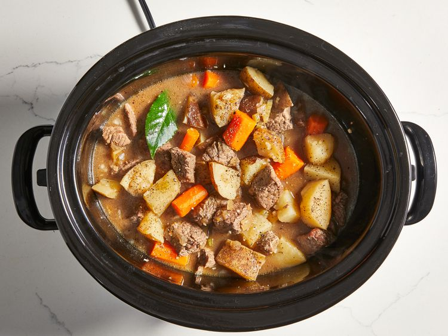

Slow Cooker Beef Stew

Warm, cozy and hearty. Is there anything better than beef stew of a cold,
winter evening?
With a good mix of protein and veggies, warm and filling and versatile
enough to be served with a variety of sides such as potatoes or rice. It is easy
to see why this ancient dish is still a popular winter dinner dish.
Plus this beef stew recipe is made using a slow cooker making it incrediblely low
maintenance.
Ingredients
- 2 pounds beef stew meat, cut into 1-inch pieces
- ¼ cup all-purpose flour
- ½ teaspoon salt
- ½ teaspoon ground black pepper
- 1 ½ cups beef broth
- 4 medium carrots, sliced
- 3 medium potatoes, diced
- 1 medium onion, chopped
- 1 stalk celery, chopped
- 1 teaspoon Worcestershire sauce
- 1 teaspoon ground paprika
- 1 clove garlic, minced
- 1 large bay leaf
Steps
- Place cut meat in slow cooker.
- Mix flour, salt, and pepper together
in a small bowl. Pour over meat, and stir until meat is coated.
- Add beef broth, carrots, potatoes, onion, celery, Worcestershire sauce,
paprika, garlic, and bay leave; stir to combine.
- Cover, and cook until beef is tender enough to cut with a spoon, on Low for
8 to 12 hours, or on High for 4 to 6 hours.
- Serve hot and enjoy!